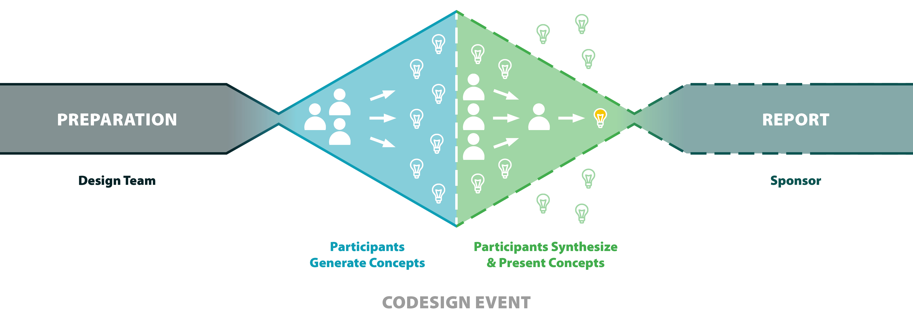
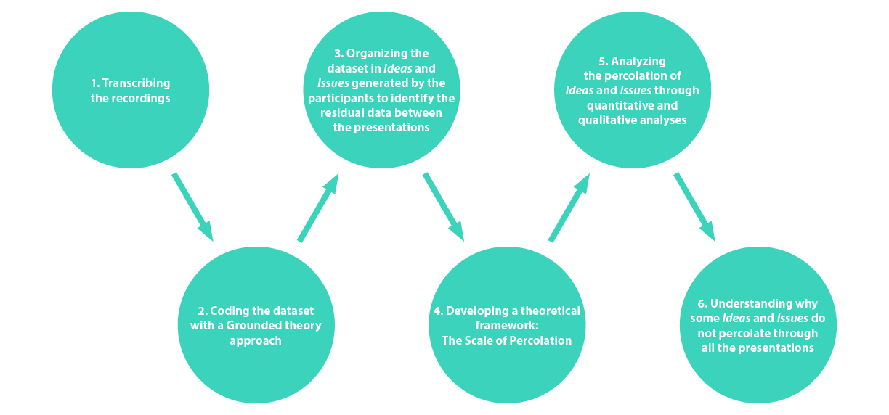
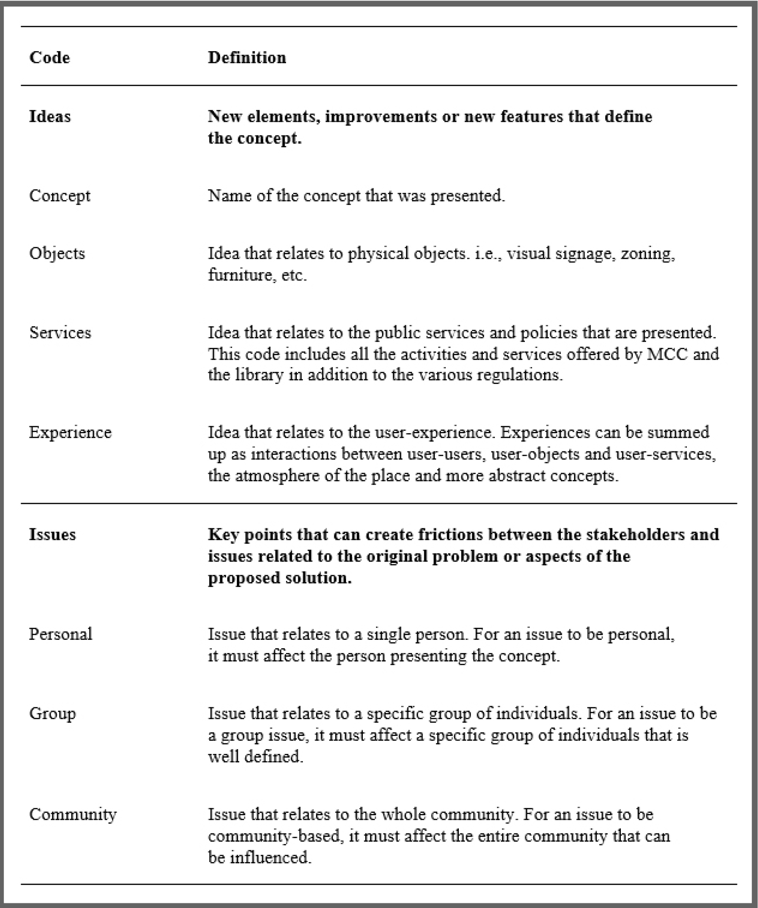
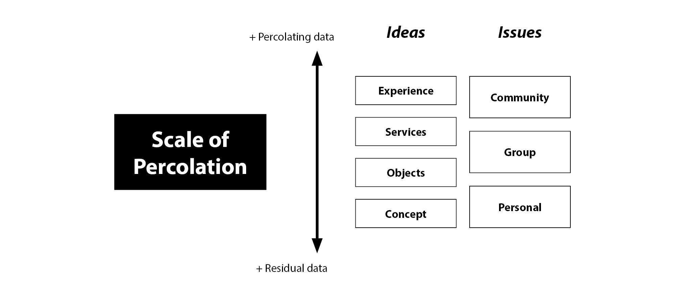

Advocating for a more Democratic Process
A critical analysis of codesign plenary sessions within public project development.

Summary
Codesign activities are increasingly used in the development of public services and policies. These approaches involve citizens in the design process, thus giving it a democratic value. However, few measures are currently in place to ensure that the epistemic value provided by participants is reflected in the final design. The objective of this project is to determine the type of ideas that can be lost during the synthesis moments of codesign activities, and then to indicate possible solutions to make the process more democratic.
My Role
Background research, literature review, field research (observations and interviews), solution prototyping, codesign activities, qualitative and quantitative analyses, master’s thesis writing
Tools
NVivo, QDA Miner, Photoshop, Illustrator, Indesign, Codesign maketools, Microsoft Excel
Context
In the public sector context, the use of participatory design methods such as codesign approaches have gained momentum since the beginning of the 21st century. Many decision‑makers see codesign as an opportunity to make the development of public services and policies more democratic, as this approach involves citizens in the design process. Codesign activities enable ordinary citizens to communicate their complex realities, thereby allowing the development of solutions that are better adapted to their needs. However, the epistemic value provided by participants still needs to be effectively communicated to the designers and project sponsors to ensure a democratic codesign process.
Codesign activities remain a complex exercise that poses a number of challenges. The type of codesign event analyzed in this research generally has three phases: the preparation of the activity, the activity itself and the conclusion phase where a report is normally delivered to the sponsor of the project. The codesign activity can be divided into two moments. A first moment of divergence where the participants generate new concepts using codesign tools (maketools) that are presented to them. Then, a moment of convergence where participants must synthesize their solution to finally present their concept.
The problem is that these moments are difficult to frame, because they imply a synthesis work. But any synthesis requires leaving some things out. In other words, synthesis efforts produce residual data. The question is, what is the value of this data? Moreover, is it possible to limit this loss of data?

Research
Literature Review
As this project was conducted within the framework of my Master's thesis, a literature review was meticulously carried out. It was partially done prior to the field research and was then completed during the analysis and writing of the thesis. The literature review touched on many topics related to participatory design, codesign approaches in the public sector, the importance of democratic participation, and the value of codesign approaches.
Field research
The field research for this project was conducted during a month-long residency at the public library of the MCC of Montreal North during the spring of 2019. This residency consisted of four phases:
- Ethnography and unstructured interviews to understand the problems that citizens can face athe the library of the MCC
- Development of 34 personas to understands who are the people using the library
- Development and test of preliminary prototypes that were developed to solve those problems
- Codesign activity to test the prototypes and create new solutions
Codesign activity
 Duration of the codesign activity: 3h45min
Duration of the codesign activity: 3h45min
Codesign phases:
1. Ideation Phase
2. Concept summarizing phase
3. Presentation phase (plenary session)
The goal of the first three phases was primarily to collect enough information to develop effective maketools for the codesign activity. However, since the objective of this research is to understand what residual data is produced from the codesign synthesis moments and the value lost, the focus of this project is primarily on the codesign activity. Here are the details of the codesign activity organized at the public library of the MCC.
In all the phases, each team had a moderator in addition to at least one note-taker. The moderator’s primary role was to explain the different stages of the activity to the participants and to ensure that the discussions did not veer off-topic.
During the ideation and concept-summarizing phases, participants were divided into three teams of 4 people and one team of 5 people. Then, each team was distributed a martyr prototype as their maketool.
A martyr prototype is a solution that was intentionally designed to make people react. So each prototype was addressing an issues of the MCC.
- Table A got Assigned the ID’ing Operation. The prototype was relative to the discrimination of only ID’ing the teenagers at the entrance of the library.
- Table B got Forbidding the Forbidden. The problem there was to address the large number of forbidding signs in the MCC.
- Table C got the objective of reviewing the zoning of the MCC and the library.
- And finally, Table D was addressing the noise problem in the library.
After the ideation phase, each team had 20 min to choose a final concept and to finalize it with its team. The participants were then told that they would need to present their concept individually to the other teams afterward. To help, a summary sheet was given to each participant.
The presentation and plenary phases were different for that codesign. Instead of having one global plenary session, 4 small plenary sessions were organized. The redistribution of the teams had for consequence that everybody had to present. Therefore, the data was multiplied by four, and the different presentations could be compared.
However, 2 participants had to leave, and to keep the teams balanced, they were replaced by the note takers (NC & NB). Also, the presenter D4 had a speech impediment, so he was helped by the note taker ND. In the end, the dataset used for this research consisted in all the transcripts of those 16 presentations.
Analysis
Organizing the dataset
The recordings of the plenary sessions collected during the codesign process were first transcribed and then coded using the software NVivo. By using a Grounded Theory approach to refine the codes developed during the analyses. In the end, the codebook generated allowed to identify the most valuable elements from the transcript.
The final codebook was divided in 2 main categories: Ideas and Issues.
The subcategories of ideas of ideas consisted in: the concept, the physical objects, the services, and the experience of each idea.
The subcategories of issues were: personal issues, group issues and community issues.
Understanding the Ideas and Issues that percolate
[TEXT HERE: parler de la comparaison des éléments (idées et enjeux) entre les différentes présentations --> Suite à l'analyse --> les expériences et les enjeux de communautés sont les éléments qui percollent le plus à travers toutes les présentations --> les concepts et les enjeux personnels sont ceux qui sont les plus perdus]

Finding the problems with codesign plenary sessions
[TEXT HERE: Les 6 problèmes identifiés]
Results
Hypotheses of the cause for the residual data
Plenary sessions constraints
Speculative solutions
Future research